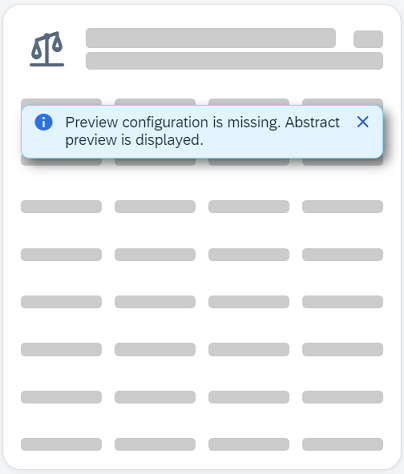

Preview
Displaying cards in preview mode is handy for the situations where the end user is exploring, selecting or configuring proposed or available cards.
Usage
It is up to the host environment to trigger card rendering into preview mode, depending on specific use cases or scenarios where this mode is applicable.
The public previewMode property is provided to set the desired preview mode.
Modes
All available preview modes are listed in sap.ui.integration.CardPreviewMode.
- "Off" - Preview is turned off, real data is displayed.
-
"MockData" - In this mode if the card is configured with mock data, it is displayed instead of the real data.
If the card is missing mock data configuration (the
mockDatasub-section in the manifests' data section), it will fall back to display an Abstract preview with a message notification like: -
"Abstract" - In this mode cards display abstract placeholders.
Example
Card that displays mock data in preview:
XML View
<mvc:View xmlns:mvc="sap.ui.core.mvc" xmlns:w="sap.ui.integration.widgets"> <w:Card manifest="./manifest.json" previewMode="MockData"/> </mvc:View>Try it Out